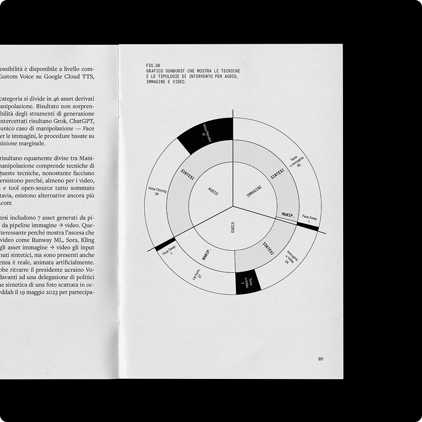
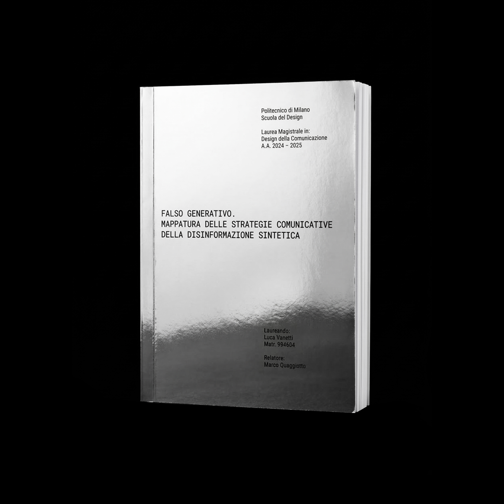

The proliferation of synthetic media has ushered in a new frontier of online misinformation. For my Master’s thesis, I conducted an in-depth investigation into how generative models are transforming our relationship with visual truth. By studying 115 instances of deceptive content, I codified the dynamics and motivations driving the creation and spread of falsehoods online—ranging from AI-generated images to synthetic video and audio. My contribution involved translating this complexity into a structured analysis, proposing media literacy as an essential defense mechanism against the machinery of manipulation.
- Year
- 2025
- Type
- Tesi di Laurea Magistrale


